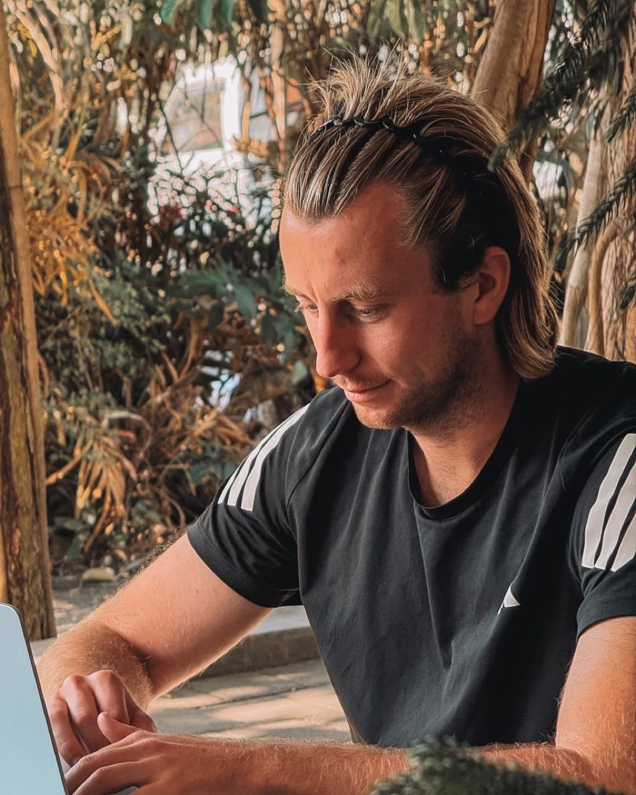
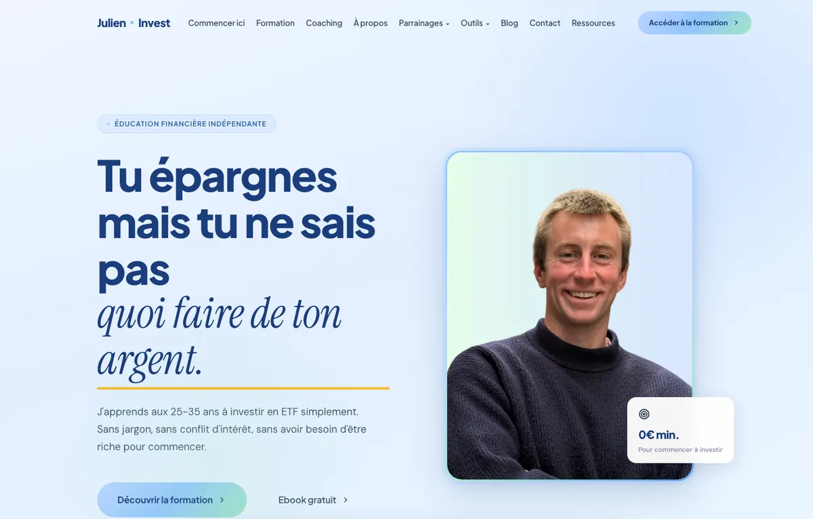
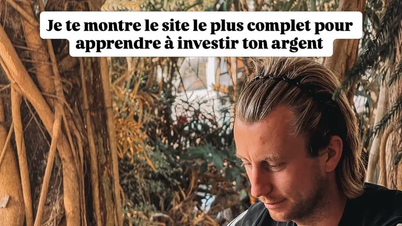
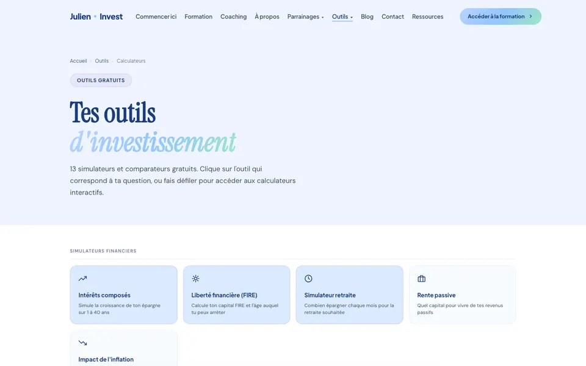
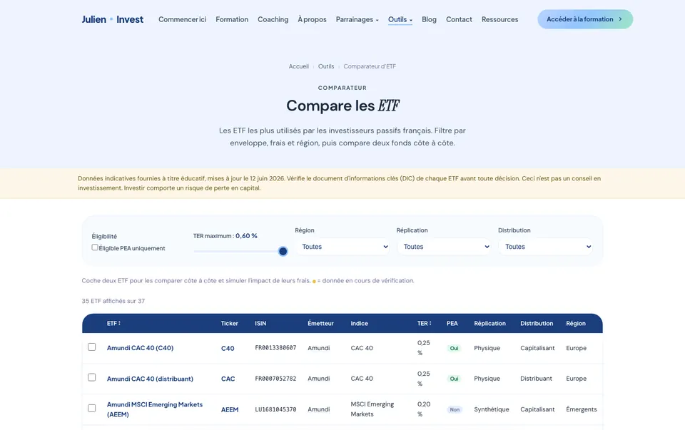

Finance Author · Content Creator · AI native
I built a finance media brand from zero.
Now I want to build at a much larger scale.
I’m Julien Denis. I built Julien Invest from scratch into a French financial education brand reaching 50K+ people on TikTok, alongside YouTube, financial tools, a course and coaching. I write, research, present, design and build the systems behind the content myself.
Currently in Sydney 🇦🇺 Open to Paris 🇫🇷 and beyond On site, hybrid or remote

TikTok 50,000 · Instagram 2,200 · YouTube 2,000. Figures as shown on my public accounts.
01The short version
I didn’t start as a finance creator.
I spent five years teaching physical education while building Julien Invest on the side.
I learned finance on my own, started publishing, built an audience, created products, built financial calculators and gradually turned a side project into a real media business.
In 2026, I left teaching to work full time on content and digital projects.
Now I want to take what I learned from building alone and apply it inside a team operating at a much larger scale.
- 2018 to 2021Sports science studies, teaching qualification, first content experiments
- 2021 to 2026Full time PE teacher. Julien Invest on evenings and weekends
- 2026Left teaching. Full time creator
- 2026 to nowSydney. Building, and looking for the next challenge
Teaching isn’t what I’m selling. But it’s why I can hold a room, explain something complicated in plain words, and hit a deadline every single week, five years running.
02What I built
Julien Invest
Financial education for French speakers aged 25 to 35.

I built the brand from zero: positioning, content strategy, research, scripts, videos, thumbnails, Instagram carousels, website, financial calculators, course and coaching offer.
The course, De 0 à Investisseur, sells at 147 € and has 13 paying students. I also offer one to one coaching.
03What I actually do
One person. The full content pipeline.
I have spent years doing every step myself. That means I know how to go from an idea to something published, without waiting for another department to make it happen.
04AI is part of how I work
I don’t use AI as a shortcut. I build systems around it.
AI has become part of my operating system. I use it to research, structure, write, code, automate and iterate. But the final responsibility for accuracy, tone and editorial judgement stays with me.
- Idea
- Research
- Knowledge base
- AI · prompts · agents
- Draft
- Human reviewMe
- Design
- Export
- Publish
Content production pipeline
I built a production system for Instagram carousels that handles content generation, layout and export while keeping to the brand’s visual rules.
Brand system
I defined reusable design tokens, typography, layout rules and editorial guidelines, so AI assisted work stays consistent from one piece to the next.
Structured knowledge
I give AI structured references and project context: the information and constraints it needs, instead of generic prompts. A missing figure gets flagged, never guessed.
Coding
I use AI assisted coding tools to build websites, automations and internal tools myself. julieninvest.com, its 13 simulators and this page were all built that way.
ToolsClaude Code · ChatGPT · Codex · Nano Banana · HTML/CSS/JS · Canva · CapCut · Systeme.io
AI increases my leverage. The output is still mine to answer for.
05Finance
Finance is the subject. Content is the craft.
I didn’t build Julien Invest because I wanted to become a generic creator.
I chose finance because I enjoy understanding how money, investing, taxation and personal wealth actually work, and then figuring out how to explain them simply.
My work so far focuses mainly on personal finance and investing for a younger French speaking audience.
The next step I want to take is deeper: becoming capable of producing content for more sophisticated investors and subjects.
Topics I work on
- Investing
- ETFs and passive investing
- PEA, CTO, assurance vie
- Compound interest
- French taxation
- Personal finance
- FIRE
- Retirement and decumulation
- Portfolio construction
- Real estate: SCPI, REITs
- Estate planning
- Crypto
- Financial education
- Succession : transmettre ton patrimoine sans payer 45 % d’impôts
- Désaccumulation : combien retirer sans vider ton capital
- Tous les impôts que tu paies en France
- REITs : l’immobilier coté en bourse
Recent YouTube subjects. The direction is already moving toward depth.
06Why Finary
Why Finary?
I have spent the last few years learning how to build alone.
What I want now is to learn how to build at a much higher level, inside a team that already understands media, finance, product and distribution.
The role interests me because it sits exactly at that intersection: financial expertise, storytelling, YouTube, audience growth and AI native production.
I also like the challenge of moving from content aimed mainly at beginners and young investors toward subjects that require more depth, nuance and precision.
I know I don’t arrive with Finary’s audience size. That’s not the claim I’m making.
I arrive having already built the underlying skills from scratch, and with a strong desire to get significantly better.
What I already bring
- Financial education for a real audience
- Writing for the ear, not just the page
- Comfort on camera
- An audience built from zero
- Production systems and AI workflows
- Full autonomy, idea to publication
What I want to do next
- Deeper investing topics
- Content for more sophisticated investors
- YouTube at a much larger scale
- Stronger editorial standards
- Working inside a team
- Higher production quality
07Selected work
A few things I’ve made.
All of it for Julien Invest, all of it in French. Researched, written, presented and designed by me.
Combien tu devrais avoir épargné à ton âge
Savings benchmarks by age, built around one uncomfortable number. Written for the ear, delivered face to camera.
Watch on YouTube ↗Succession : transmettre son patrimoine
French inheritance tax and how to prepare a transfer of wealth. One of my more technical recent subjects.
Watch on YouTube ↗Crypto : l’acheter et la sécuriser
Thumbnail and video on buying and storing crypto safely. On YouTube, this is where the visual effort goes.
Watch on YouTube ↗
Instagram carousel
A carousel presenting julieninvest.com to my Instagram audience. Same brand system as the site, adapted to the format.
View on Instagram ↗
Financial simulators
Compound interest, FIRE, retirement, inflation and tax simulators. Free tools that turn a video into something people can use.
Open the tools ↗
ETF comparator
Filter ETFs by wrapper, fees and region, then compare two side by side. Dated data, sources to check, no advice.
Open the comparator ↗08How I think about content
My rules for content.
Clarity over complexity
If the audience doesn’t understand it, the content failed.
No invented numbers
If I can’t verify a figure, I don’t publish it as fact.
Strong hooks, honest substance
The hook earns attention. The content has to deserve it.
Every piece has a job
Educate, spark curiosity, build trust or drive an action. Never all four at once.
09What I bring
What I can bring to Finary Media.
Financial education
I already create content about investing and personal finance for a real audience.
Writing
I research and write scripts designed to be spoken, not just read.
Camera
I’m comfortable presenting and explaining concepts on camera.
Autonomy
I’m used to owning the entire process, from idea to publication.
AI native workflows
I build systems and tools, rather than using AI for isolated tasks.
Builder mindset
When something is missing, I tend to build it myself.
10Location
Where I can work.
Paris, on site
Open to relocating to Paris.
Hybrid
Open to a hybrid setup, and willing to travel or relocate as needed.
Remote
Open to fully remote roles.
Currently based in Sydney, Australia. I’m not limiting my search to Sydney: I’m looking internationally and I’m open to relocating for the right role. Location is flexible. The opportunity matters more.
Contact
I’d love to talk.
If my background looks relevant to what you’re building at Finary, I’d be happy to discuss the role.
julien.denis46@gmail.com